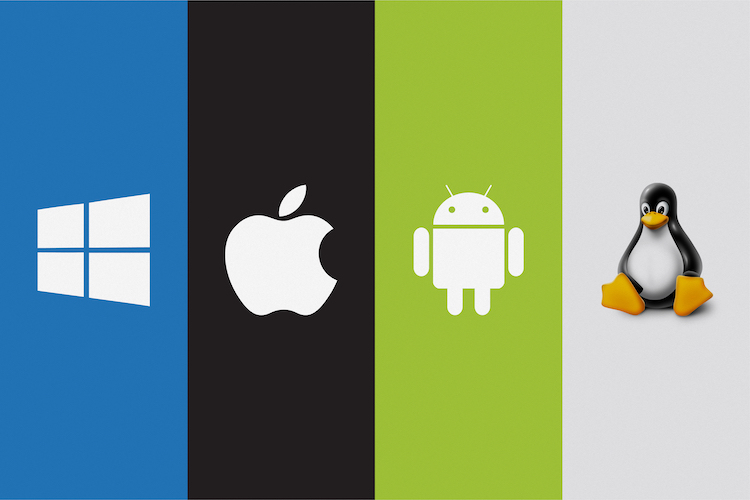

É o conjunto de programas que gerenciam recursos, processadores, armazenamento, dispositivos de entrada e saída e dados da máquina e seus periféricos
Sentence1: The most used operating system used by users is Windows.
Sentencce2: Linux is a famous operating system mainly among IT professionals.